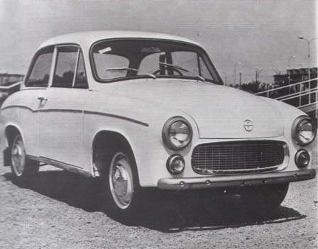

Star 20 | Warszawa M-20 | Syrena 105 | Fiat 125p |
Star 20
Star 20 był polskim powojennym samochodem ciężarowym, produkowanym w latach 1948-1957 w Fabryce Samochodów Ciężarowych Star w Starachowicach. Przez pół wieku pojazd ten był modernizowany i powstałe jego najrozmaitsze wersje. W sume wyprodukowano ponad 40 tysięcy egzemplarzy. adwozie Stara 20 osadzone zostało na podłużnicowej ramie spawanej wykonanej z blachy tłoczonej. W układzie jezdnym zastosowano przednią sztywną oś zawieszoną na półeliptycznych resorach piórowych. Z tyłu zastosowano most napędowy zawieszony na półeliptycznych resorach piórowych, dodatkowo wspartych przez pomocnicze resory piórowe. Napęm ciężarówki był polski 6-cylindrowy rzędowy silnik benzynowy typu S42 o pojemności 4188 cm3 i maksymalnej mocy 85 KM. Pojazd posiadał manualną 4-biegową, niesynchronizowaną skrzynię biegów. Sporą wadą pojazdu był niewielki rozstaw osi, co było powodem ograniczonej stateczności samochodu.
Warszawa M20
FSO Warszawa była polskim samochodem osobowym produkowanym w latach 1951-1973 w warszawskiej fabryce FSO na Żeraniu. Produkowana była na licencji radzieckiego samochodu Pobieda. Przez cały okres produkcji auto poddawane było modernizacjom. Warszawa była pierwszym powojennym samochodem osobowym PRL-u produkowanym seryjnie. W początkowym okresie produkcji samochód montowany był z części radzieckich. Pierwsza Warszawa M20 wyprodukowana wyłącznie z podzespołów produkowanych w Polsce, wyjechała z fabryki w 1956 roku. Do napędu samochodu użyto dolnozaworowej jednostki R4 o pojemności 2120 cm3, która generowała moc maksymalną równą 50 KM. Napęd przekazywany był na koła tylne poprzez 3-biegową manualną skrzynię biegów. Zawieszenie kół przednich było niezależne i składało się z podwójnych wahaczy, opartych na sprężynach śrubowych oraz hydraulicznych amortyzatorach ramieniowych. Z tyłu zastosowano sztywny most napędowy zawieszony na półeliptycznych resorach piórowych, dodatkowo wspartych przez hydrauliczne amortyzatory ramieniowe. Założenia produkcji ponad 25000 sztuk rocznie nigdy nie zostały zrealizowane. W szczytowym okresie liczba dochodziła do około 18 tysięcy. Samochód był od początku produkcji konstrukcją przestarzałą, zaś historia silnika M20 sięgała jeszcze lat 30.
Dane techniczno-eksploatacyjne modelu M20:
- Silnik: czterocylindrowy, dolnozaworowy
- Pojemność skokowa: 2120 cm3
- Moc maksymalna: 50 KM (36,8 kW), moment obrotowy 122 Nm przy 2200 obr/min
- Prędkość maksymalna: 105 km/h
- Stopień sprężania: 6,2
- Zużycie paliwa: 13,5 l/100 km
- Sprzęgło: suche, jednotarczowe
- Skrzynia biegów: ręczna, trójprzekładniowa plus wsteczny
- Rozstaw osi: 2700 mm
- Wymiary (długość/szerokosć/wysokość): 4665 mm, 1695 mm, 1640 mm
Syrena 105
 Syrena była samochodem osobowym produkowanym w latach 1957-1972 przez FSO w Warszawie, a następnie aż do 1983 roku w Fabryce Samochodów Małolitrażowych w Bielsku-Białej. Jego pierwszy model nazwano Syrena 100, zaś ostatni Syrena 105. Pierwsze Syreny wyposażone były w silniki dwusuwowe typu S-15 o mocy 27 KM. W Syrenie 105 jednostką napędową był dwusuwowy, 3cylindrowy silnik gaźnikowy z przepłukiwaniem zwrotnym. Umożliwiał on przy pojemności skokowej 842 cm3 osiągać moc maksymalną około 40 KM przy 4300 obr/min. W sumie wyprodukowano ponad pół miliona Syren. Syrena posiadała napęd przedni. W Syrenach zastosowano podwozie konstrukcji ramowej, podłużnicowej, spawanej z belek o przekroju prostokątnym.
Dane techniczno-eksploatacyjne modelu 105:
- Silnik: dwusuwowy, 3-cylindrowy
- Pojemność skokowa: 842 cm3
- Moc maksymalna: 40 KM przy 4300 obr/min
- Prędkość maksymalna: 120 km/h
- Stopień sprężania: 7,0-7,2
- Zużycie paliwa: 8,8 l/100 km
- Napęd: przedni
- Skrzynia biegów: czterobiegowa + wsteczny
- Masa pojazdu: 940 kg
- Wymiary (długość/szerokosć/wysokość): 4040 mm, 1565 mm, 1515 mm
Porównanie silników modeli 100 oraz 105:
| Model | S-15 | S-31 | jedn. |
|---|---|---|---|
| Poj. skokowa | 746 | 842 | cm3 |
| Moc max | 27 | 40 | KM |
| Prędkość max | 100 | 120 | km/h |
Fiat 125p
Fiat 125p był samochodem osobowym klasy średniej produkowanym w Polsce na licencji Fiata. Montaż miał miejsce w FSO na Żeraniu os 1967 do 1991 roku. Samochód został wprowadzony jako następca dla mocno przestarzałej już Warszawy. Napęd stanowiły benzynowe silniki R4 OHV o pojemności 1,3 i 1,5 litra, w późniejszym czasie dodatkowo dodano wybór jednostek napędowych Poloneza. Moment obrotowy przenoszony był poprzez suche jednotarczowe sprzęgło, 4-biegową manualną skrzynię biegów, dwuczęściowy wał napędowy i tylny most na koła tylne. Polski 125p różnił się od włoskiego okrągłymi kloszami świateł zamiast kwadratowych oraz inną atrapą chłodnicy w pasie przednim, brakiem chromowanych listw bocznych nadwozia i innym przetłoczeniem na masce silnika i klapie bagażnika. Samochód wyposażono w mechanizm różnicowy. Wewnątrz kabiny pasażerskiej zastosowano obite sztuczną skórą fotele. Na desce rozdzielczej znajdowało się osiem prostokątnych kontrolek oraz poziomy prędkościomierz z charakterystycznym wyświetlaczem. W 1976 czyli roku szczytowym, powstało aż 116 940 sztuk tego modelu fiata.